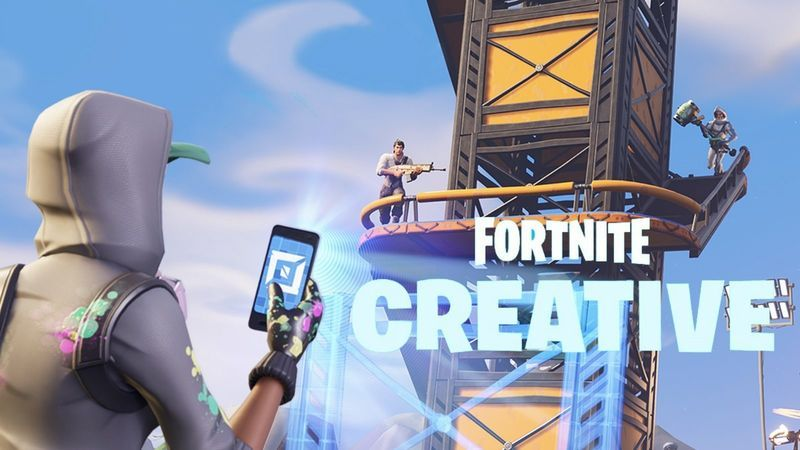
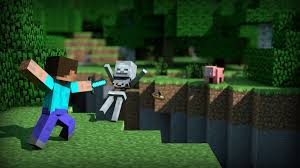

Mijn games:
Fortnite Creative
fortnite was erg populair en iedereen vond het altijd een toffe game om te spelen.
Maar de updates verpeste de game enorm en nu vind niemand het echt zo heel leuk maar, in ieder geval niet zoals het vroeger was.
Gelukkig is fortnite Creative er nog steeds en dit vind ik erg leuk om met mijn vrienden te doen.
minecraft
minecraft is een game die iedereen wel eens heeft gespeeld, het is een populaire game, zelfs na tien jaar.
Star Wars Battlefront 2

star wars battlefront is een online game waar je tegen elkaar vecht als de bekende helden en slechteriken van star wars.
ieder personage heeft zijn unieke eiegnschappen. ieder personage is goed tegen de ander en dus moet je strategisch nadenken over wie je wilt zijn.
hoe meer je speelt, hoe meer je de personages goeie en slechte kanten gaat begrijpen. dat maakt het spel zo leuk.
Super Mario Galaxy

Mario galaxy is waarschijnlijk mijn favoriete game aller tijden, alles eraan werkt perfect. En levels opnieuw spelen blijft leuk. de verhaallijn is niet zo goed maar daar gaat het niet om in dit spel.
Mario Galaxy is als een 'platformer' gelabeld. Platformers zijn games waar je een parcour doet, van platform naar plaform springen simpel gezegd.
Mario Galaxy heeft het platformen enorm goed gemaakt omdat je verschillende soorten zwaartekracht hebt omdat je in de ruimte speelt en dat maakt het zo leuk
Als je dit voor het eerst speelt is het zeker moeilijk en erg wennen maar als je het goed kan dan is dit een enorm leuke game